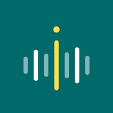
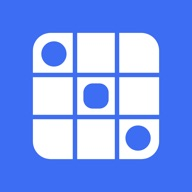
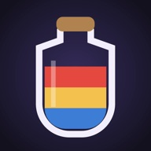
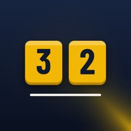

Özak Tekstil S/4HANA
Barkod etiketleri, TR/EN sipariş formları, EWM ve PP lot etiket ekranları, fason hurda tüketimi.
Rapordan entegrasyona, SAP S/4HANA üzerinde teknik tasarımdan canlıya kadar geliştiriyorum. Akşamları da Albovix'te küçük işletmeler için web ve mobil uygulamalar çıkarıyorum.
Özak Tekstil'in S/4HANA geçişinde MM, EWM, QM, PP ve PM'de 17 geliştirmeyi teknik tasarımdan canlıya taşıdım. Holding genelinde 11 modülde rapor, interface, enhancement ve form; RAP ile kur farkı çevirili satıcı yaşlandırma raporu, BAdI ile ana veri validasyonları.
C#, .NET Core ve SQL Server ile çok katmanlı web projelerinde backend.
OOP ABAP, ALV Grid raporlama, Module Pool diyalog programlama.
İBB datathonu: 24 saatte otobüs doluluk tahmin modeli ve mobil uygulaması.
Barkod etiketleri, TR/EN sipariş formları, EWM ve PP lot etiket ekranları, fason hurda tüketimi.
CRM talebinden SD siparişi ve PM iş emri açan, durumu geri besleyen çift yönlü akış.
Security Audit Log kayıtlarını gerçek zamanlı olarak kurumsal SIEM'e aktaran interface.
Biletinial verisini BAPI/RFC ile FI/SD'ye aktarma, onay hatırlatmaları, RE-FX sözleşme uyarıları.
Küçük işletmelerin defterle yürüttüğü işleri telefona taşıyan web uygulamaları. Kurulum yok, tarayıcıdan çalışıyor.
Dershaneler için yoklama, ücret, deneme analizi ve veli uygulaması.
● CANLIKafe ve restoranlara QR ile ortak sepet, mutfak ve yazıcıya sipariş.
● CANLIUygulamasız sadakat kartı: dönen QR, NFC, otomatik kampanya.
● CANLIEmlak ofisi evrakı; sözleşmeler telefondan imzalanır.
● CANLIAraç kiralama sözleşmesi WhatsApp'tan onay, hasar fotoğrafıyla teslim.
+ WEB SİTELERİDiyetisyen, fizyoterapist, muhasebeci, pilates, psikolog, veteriner.
iOS ve Android için yazdığım, App Store'a hazırlanan uygulamalar. Çoğu tamamen çevrimdışı: hesap yok, reklam yok, veri cihazdan çıkmıyor.
Hedef süreye göre okuma hızını hesaplayan konuşma provası.

Ders ve toplantı kaydı; her not sesin o saniyesine bağlanır.
Sohbet dökümünden cihazda paylaşılabilir istatistik karnesi.

Her gün dört klasik mantık bulmacası.

Kazanların iksir karıştırdığı simyalı sıralama bulmacası.

Halı saha ligi: fikstür, puan durumu, dengeli takım kurma.
Serbest çalışanlara saat takibi ve KDV/stopajlı PDF fatura.
Muhasebe bürolarına cari takip ve WhatsApp hatırlatma.
OOP ABAP · CDS · AMDP · RAP · ALV · BAdI · SmartForms · Adobe Forms
BAPI · RFC · IDoc · OData · Gateway · SOAP · REST
MM · SD · EWM · QM · PP · PM · FI · CO · HR · RE-FX
Flutter · Godot · Node.js · .NET · TypeScript · Python